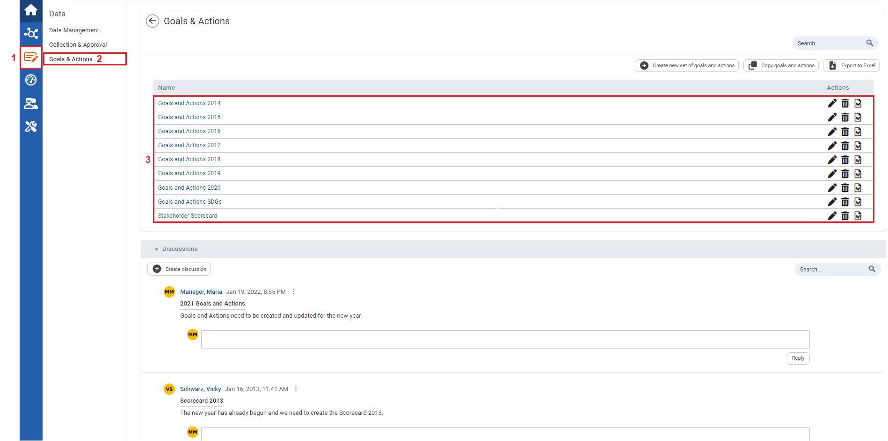
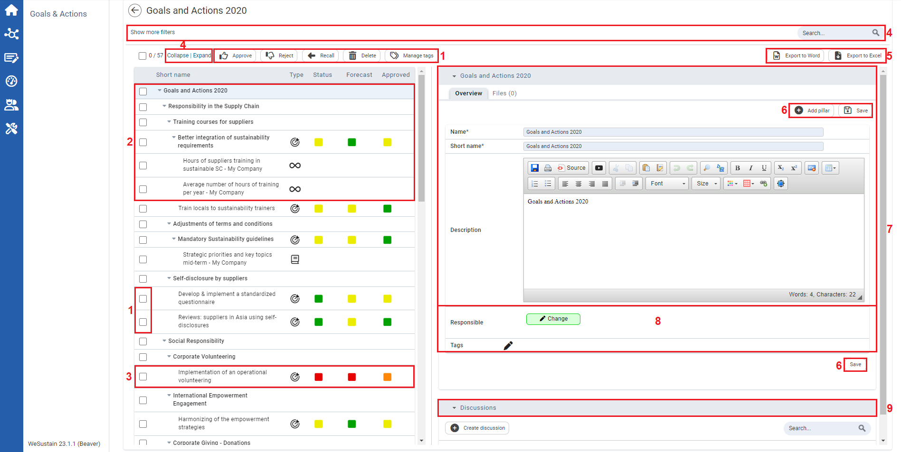
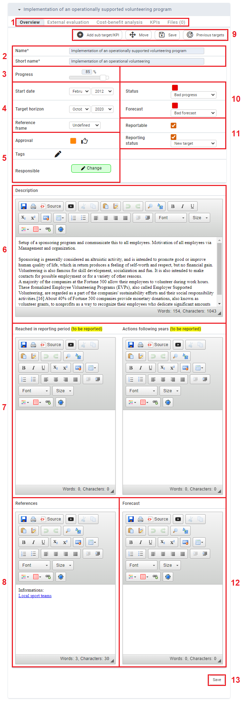

to export the scorecard to Excel. Click to download the scorecard as a Word file.
to export the scorecard to Excel. Click to download the scorecard as a Word file. to insert a new pillar below the currently selected element. Click
to insert a new pillar below the currently selected element. Click  to save the changes.
to save the changes. Under Goals & Actions, you can define your goals and responsibilities in sustainability management and comprehensively review and control the status of the achievement of goals at any time.

| 1 | On the left navigation panel, click Data. |
| 2 | Click Goals & Actions. |
| 3 | From the list of Goals and Actions that displays, click a Goals and Action of your preference. |

| 1 | Select the checkboxes in conjunction with action symbols to change the status of the targets, Delete entries (), or Manage tags (). |
| 2 | The structure of a scorecard is based on three levels: The most important ones are the actual targets (), which form the lowest unit. They are then summarized into areas (topics). These are in turn summarized into higher-level pillars (of sustainability). |
| 3 | Here you can see a KPI that has been linked to a target. |
| 4 | You can use the Search function to browse through the displayed entries by typing any term into the search field. Click Show more filters to filter per specific criteria. You can also Collapse and Expand all entries. |
| 5 | Click to export the scorecard to Excel. Click to download the scorecard as a Word file. |
| 6 | Click to insert a new pillar below the currently selected element. Click to save the changes. |
| 7 | This panel contains two tabs; the default tab is Overview, where you can edit the Name, Short name and Description. The Files tab allows you to attach documents. |
| 8 | You can define the Responsible person and Tags here. |
| 9 | In the Discussions panel you can create discussions and find existing ones. Those in the smaller area on the right are for the currently-selected element. The discussions panel on the bottom lists all discussions from the current scorecard. |

1 | Here you will find four tabs. The Overview is the default tab, where you find and fill in all relevant information. There are also tabs for the External evaluation, KPIs regarding a target and Files. |
| 2 | Here you can change the Name and Short name of the target. |
| 3 | You can use the Progress bar to display the level of progress. |
4 | Enter the Start date and Target horizon. Under Reference frame you can define which areas (e.g. departments) and units (e.g. countries) the target refers to. If you cannot find your choice in the list, you can enter your own text by selecting ‘Free text’. |
5 | Here you can edit the Approval process, Tags and the Responsible person. |
| 6 | If required, enter a Description for the target here. |
7 | These text fields allow you to enter information to Reached in reporting period and Actions following year which are to be reported. |
| 8 | Enter References here. |
9 | Click to add a subordinate target or KPI. Click  to change the position of the selected target. Click to see a brief overview of the progress of the same target in older scorecards. to change the position of the selected target. Click to see a brief overview of the progress of the same target in older scorecards. |
10 | For Status (actual progress) and Forecast (forecast progress) you can choose between good, medium and bad. |
11 | Select the checkbox to set the target as Reportable. If it is already being reported, you can indicate the Reporting status. |
| 12 | Here you can add information to the Forecast of the target. |
| 13 | Click Save to save your changes. |